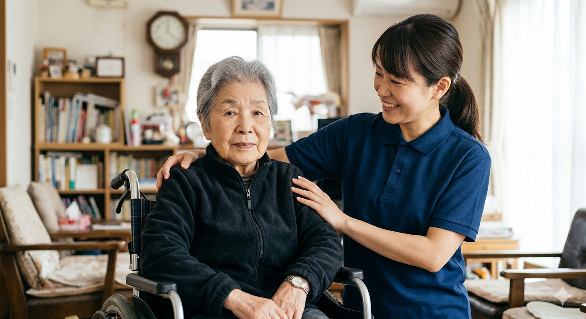

介護保険の申請からケアプランの作成まで、ケアマネジャーに何でもご相談ください。

介護が必要になっても、住み慣れた自宅や地域で安心して笑顔で暮らせるよう、私たちはご利用者様とそのご家族に寄り添います。
「退院後の生活が不安」「介護保険の使い方がわからない」といったお悩みを、地域の医療・福祉機関と連携しながら一緒に解決していきます。
私たちは、住み慣れた我が家で安心して自分らしい生活を続けられるよう、お一人おひとりに寄り添った在宅介護サービスを提供しています。
【住み慣れた自宅での暮らしをサポート】
ホームヘルパーがご自宅を訪問し、日常生活の支援を行います。
【最適な介護プランを一緒に作る、介護の相談窓口】
ケアマネジャー（介護支援専門員）が、ご利用者様やご家族のご希望をお聞きし、最適な「ケアプラン（介護サービス計画）」を作成します。
【「自分でできること」を増やし、自立を支援】
要支援1・2の認定を受けた方を対象としたサービスです。ご利用者様自身ができる限り自立した日常生活を送れるようになることを目指します。
【日々の「困った」に柔軟に対応】
自治体の総合事業に基づくサービスや、保険外の独自サービスを提供しています。従来の介護保険サービスだけではカバーしきれない、きめ細やかなサポートを行います。
ご自宅で暮らす障がいをお持ちの方や、そのご家族が安心して自分らしい毎日を送れるよう、専門のホームヘルパーがご自宅を訪問し、生活全般を優しくサポートします。
【ご自宅での自立した暮らしをまごころで支援】
自宅で自立した生活が送れるよう、心身の状況に合わせた介護や家事の援助を行います。
【重度の障がいをお持ちの方の生活を24時間体制で包括サポート】
重度の肢体不自由や知的障がい・精神障がいがあり、常に介護を必要とする方に、比較的長い時間帯で総合的なサービスを提供します。
【視覚障がいをお持ちの方の安全な外出をサポート】
視覚障がいにより移動が著しく困難な方が外出される際、安全に移動できるよう必要な情報を提供し、移動の援護を行います。
【行動が難しい方の危険を回避し、外出を支援】
知的障がいや精神障がいにより、行動上著しい困難がある方（自己判断が難しい方）が行動する際に、生じ得る危険を回避するための予防や援助を行います。
当事業所には、介護スタッフだけでなく医療の専門家である「看護師」が常駐しています。 日々の細やかな健康管理から緊急時の迅速な対応まで、医療と介護が密に連携した安心の体制をお届けします。
スタッフ間で常に情報を共有し、日々の小さな体調変化を見逃さず病気の重症化を防ぎます。
万が一の急変時も、現場から看護師へ即座に連絡が繋がり、主治医や救急機関とスムーズに連携します。
医師の指示書や看護師との連携のもと、専門研修を修了した介護職員がご自宅での「医療的ケア（特定の医行為）」に安全に対応いたします。
口腔内・鼻腔内・気管カニューレ内部の吸引に対応。呼吸を楽に保ち、感染症を予防するため、丁寧かつ衛生的にケアを行います。
胃瘻（いろう）や経鼻チューブからの栄養剤の注入、器具の衛生管理を行います。確実な手順で安全に栄養摂取をサポートします。
ケアプランの作成や申請代行などに関する
全額が介護保険から給付されるため、費用を気にせず安心してご相談いただけます。
まずはお電話または相談フォームからお気軽にご連絡ください。秘密は厳守いたします。
ケアマネジャーがご自宅へ伺い、ご本人やご家族のお困りごと、今後のご希望を詳しくお聞きします。
お聞きした内容をもとに、自立した生活を送るために最適なプランを作成し、ご提案します。
各サービス事業者と契約を結び、作成したプランに沿って介護サービスの利用がスタートします。
| 事業所名 | ステムテップ株式会社 |
|---|---|
| 介護保険番号 | 〇〇〇〇〇〇〇〇〇〇 |
| 住所 | 〒000-0000 東京都中央区日本橋浜町２−１ー７ |
| 電話番号☎️ | 03-6810-8652 |
| メール✉️ | stemtip.asto@gmail.com |
| 受付時間 | 月曜日〜金曜日 9:00〜18:00（土日祝・年末年始休み） |